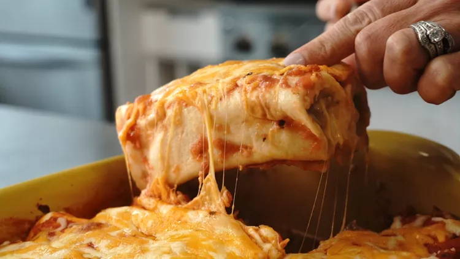

Easy Enchiladas

This recipe for Easy Enchiladas really is that easy. A jar of salsa con queso adds creaminess and flavor to ground beef so all you have to do is roll it up in tortillas and bake it with tomato salsa topped with cheese.
Ingredients
- 2 (16oz) jars prepared salsa
- 1lb ground beef
- 1 (15.5oz) jar prepared salsa con queso
- 20 (8in) flour tortillas
- 1 (8oz) package shredded cheddar-monterey jack cheese
How to make it
- Preheat an oven to 350 degrees F (175 degrees C). Grease a 9x13 inch baking dish, and pour the salsa into the bottom of the dish. Set aside.
- Cook and stir the ground beef in a skillet over medium heat for about 10 minutes, until meat is browned and crumbly. Drain the grease from the beef, and add the salsa con queso to the skillet, stirring to mix well. Place about 2 tablespoons of the beef mixture down the center of each tortilla, roll the tortillas, and place them seam side down on top of the salsa in the baking dish. Sprinkle the shredded cheese on top of the enchiladas.
- Bake for 15 to 20 minutes in the preheated oven, until the cheese is browned and the enchiladas are hot and bubbling.
- Enjoy!
Credit